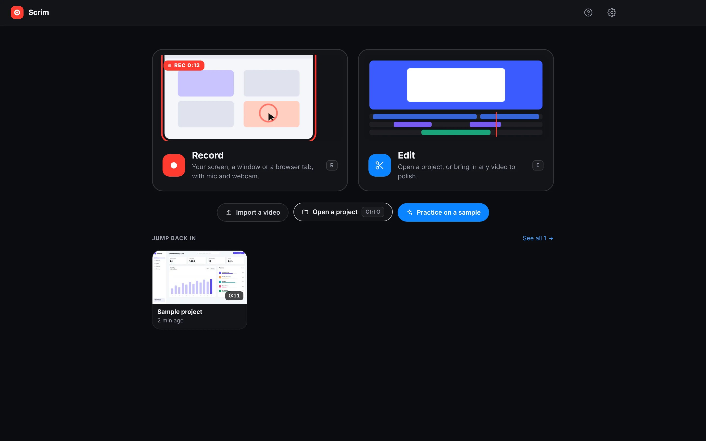
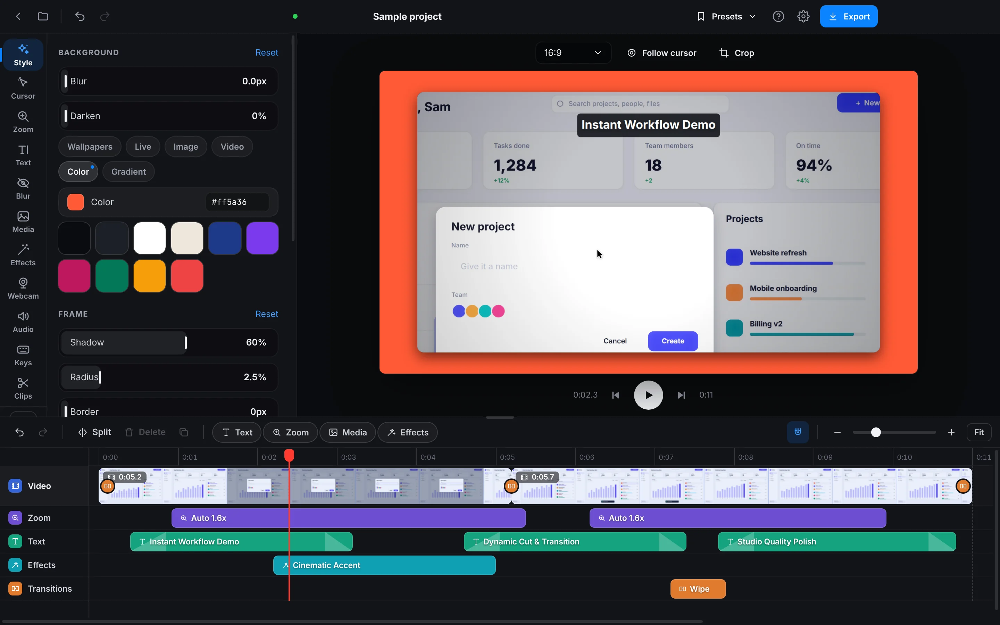

01
Hit record.
Screen, mic, PC sound and webcam. Go on, press it.

3
0:00
Saved. Zooms added automatically.
Editing
Auto zooms, cursors, backgrounds, trims and a timeline that stays out of your way. Try each part below.
Hands on
01
Screen, mic, PC sound and webcam. Go on, press it.


02
That's what every click in your recording turns into.
03
19 styles in the app. Four of them run this page.
04

05
Hover the glowing dots.
06
Every click becomes a step with a screenshot. PDF or web page.

 16:9 · 1080p
16:9 · 1080p
07